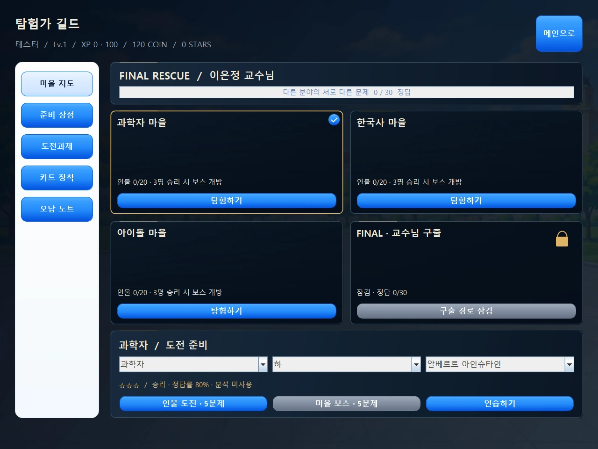
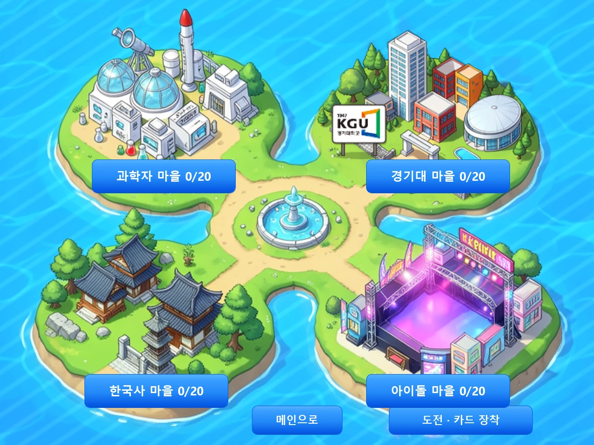
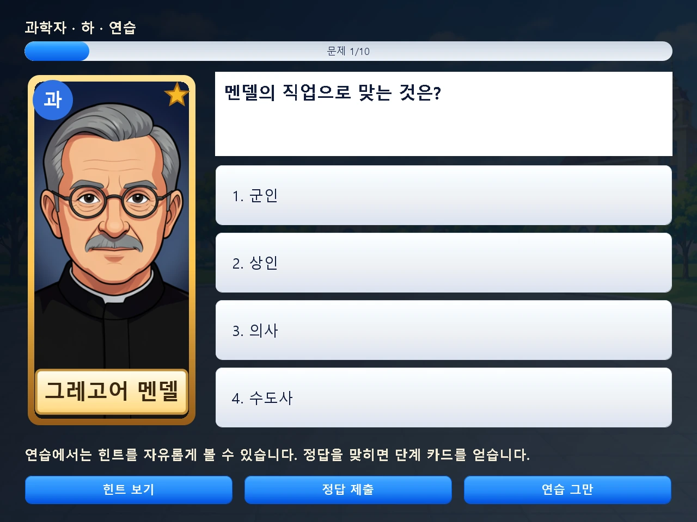
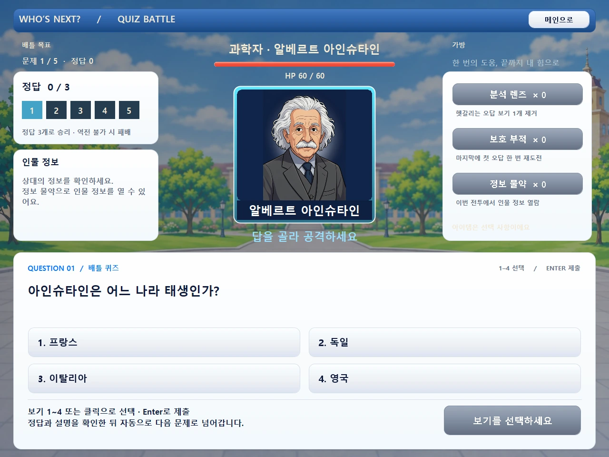
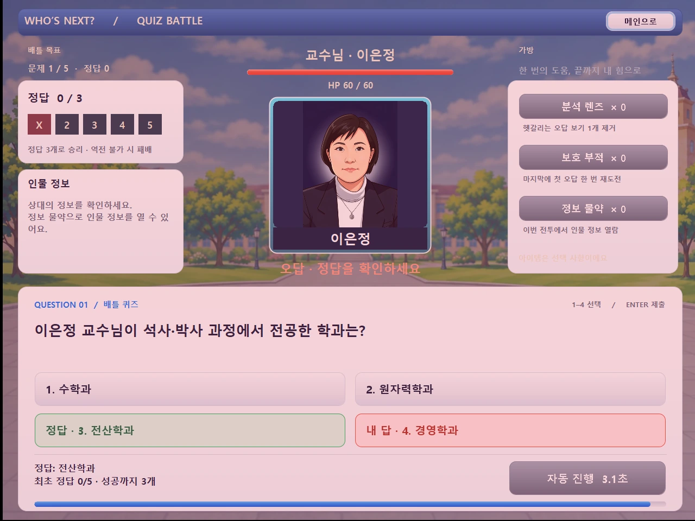
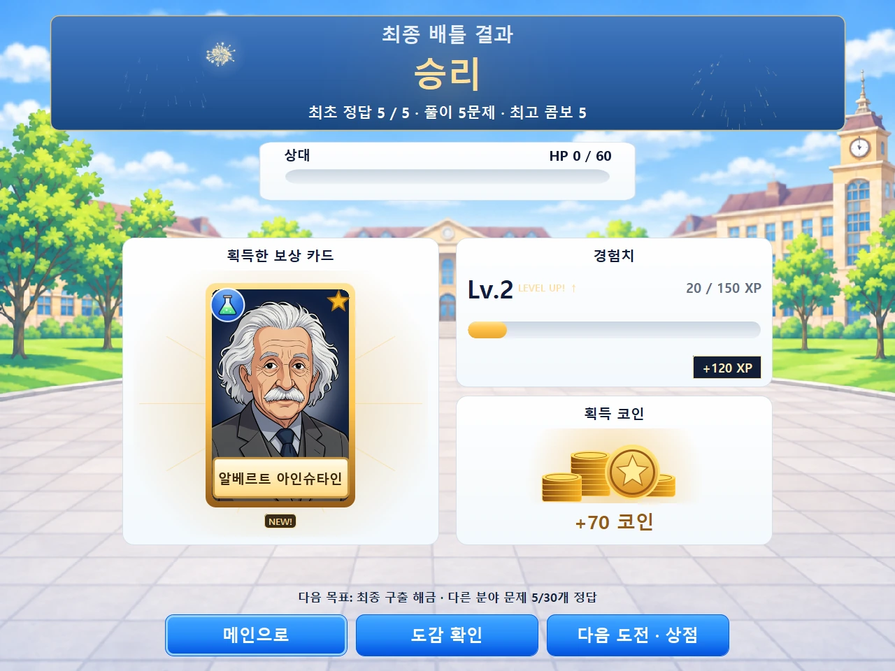
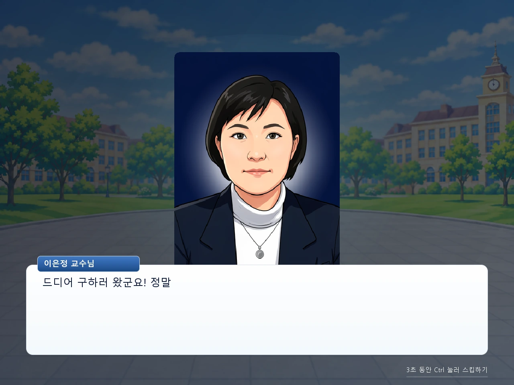
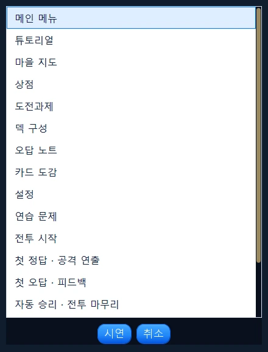

01. 팀 개발과 View 단위 MVP
Git Flow를 팀에 맞게 변형해 develop을 기본 브랜치 겸 통합 지점으로 뒀다. 팀원 각자가 만든 MVP를 가져와 문제·배틀·결과·도감 등 View 단위로 역할을 나눴다. 회의에서 화면 연결과 전투 동작을 정리하고, 기능 브랜치의 PR을 develop에 합친 뒤 통합 흐름을 확인했다.
02. 설계 결정 ① View에서 View·Event·Feature로
feat/new-architecture에서 구조 개선 예시를 먼저 구현해 팀이 같은 기준으로 작업하도록 했다. 당시 중간 검사가 남아 있어 GUI와 기능 모두 바뀔 가능성이 컸다. MVC 전체를 도입할 규모는 아니었으므로 View는 표시, Event는 입력과 화면 생명주기, Feature는 기능 흐름을 맡도록 정했다. 필요한 객체는 생성자로 주입하고 Application에서 연결했다.
03. 전체 코드 구조와 도메인 기반 설계
src/main/ ├─ java/org/kgu/ │ ├─ Main.java │ ├─ core/ 앱 실행, 창, 데이터 모델, 로딩, 저장, 공용 UI │ └─ domain/ 퀴즈·전투·보상, 모험·도감, 스토리·대화, 기타 사용자 기능 └─ resources/ 이미지, 문제, 대본
도메인 기반 설계로 게임을 실행하는 공통 기반과 실제 게임 기능을 나눴다. core는 앱 시작, 창과 화면 전환, 모델, 리소스 로딩, 저장과 진행도, 공용 UI를 관리한다. domain은 퀴즈·전투·보상, 모험·도감, 스토리·대화 등 실제 게임플레이와 로그인·메뉴·설정·시연 같은 사용자 기능을 맡는다.
실행은 Main → Application → MainWindow 순으로 시작한다. Application이 객체를 조립해 화면을 등록한다. 플레이어가 조작하면 View → Event → Feature로 입력이 전달된다. 화면 배치는 view/layout, 반복 부품은 view/component에 둔다.
04. 빌드 표준화와 Gradle 선택
팀원마다 빌드·실행 방식이 달라지는 것을 줄이고, macOS·Windows·Linux의 실행 경로 차이에 대응하기 위해 Gradle을 도입했다. Gradle Wrapper가 프로젝트의 Gradle 버전을 고정한다. macOS·Linux는 ./gradlew, Windows는 .\gradlew.bat로 같은 run·check 작업을 실행한다. src/main/resources의 이미지·문제·대본을 배포물에 포함하고 classpath에서 읽기 때문에 프로젝트 루트나 이미지의 절대 경로를 가정할 필요가 없다.
Maven으로도 빌드와 패키징은 가능하다. 이 프로젝트에는 통합 테스트용 카드 ZIP 풀기, 작업 폴더 준비, 검증 프로그램 실행처럼 프로젝트 고유 작업이 있다. Gradle에서는 이 작업을 Copy와 JavaExec 태스크로 정의하고 dependsOn으로 test·check에 연결할 수 있다. 팀은 이런 작업의 실행 순서를 한 빌드 파일에서 직접 읽고 수정할 수 있다는 점을 기준으로 Gradle을 선택했다.
05. SOLID를 코드로 설명하기
SRP (단일 책임 원칙) — BattlePanel은 배치·피드백·타이머를 맡고 BattleEngine은 정오답과 승패를 판정한다.
OCP (개방-폐쇄 원칙) — View와 LifecycleEvent를 구현해 화면을 등록할 수 있다. 새 화면을 연결할 때 MainWindow의 전환 알고리즘은 그대로 쓴다.
LSP (리스코프 치환 원칙) — 로그인·연습·결과는 모두 View 계약으로 등록된다. MainWindow는 구체 화면의 타입을 검사하지 않고 ViewId·컴포넌트·크기만 사용한다.
ISP (인터페이스 분리 원칙) — 표시 계약인 View와 진입·이탈 계약인 LifecycleEvent를 분리했다. 종료할 작업이 없는 화면은 기본 onExit를 쓴다.
DIP (의존성 역전 원칙) — GameFeature는 JFrame을 직접 제어하지 않고 생성자로 받은 Consumer<ViewId>를 호출한다. Application이 실제 화면 전환을 연결한다. 생성자 주입(DI)은 이 연결을 외부에서 전달하는 구현 방법이다.
06. 중간 평가 이후 UI와 게임 흐름 개편
중간 평가에서 기능이 부족하다는 피드백을 받았다. 화면 전반을 다시 구성해 조작을 직관적으로 만들고, 색상·버튼·패널·카드·진행 막대는 디자인 시스템의 기준을 공유하도록 했다. 배틀에는 타격과 최종 공격 연출을 추가했고, 스토리·최종 목표·구출 대화로 전투의 결과를 이야기와 연결했다.

07. 전체 데이터와 화면 흐름
4개 분야의 80명, 난이도별 다섯 문제씩 총 1,200문제, 인물별 3단계 카드 이미지를 사용한다. 프롤로그 → 로컬 ID → 첫 접속 튜토리얼 → 메인 메뉴 → 연습·배틀 → 결과로 이어진다. 메인과 결과에서 도감과 다음 도전으로 이동하고, 오답은 오답 노트에서 복습한다.

08. 주요 화면 ① 연습 퀴즈
상단에는 진행률, 왼쪽에는 인물 카드, 오른쪽에는 문제와 네 개의 보기, 하단에는 힌트·제출 버튼이 있다. 같은 분야와 난이도에서 서로 다른 인물 10명을 뽑고 보기를 섞는다. PracticeLayout이 배치하고 QuestionGUIEvent가 답안을 GameFeature에 전달한다.

09. 주요 화면 ② 배틀과 보상
상대 HP·아이템·문제 영역을 한 화면에 표시한다. 5문제 중 3개를 맞히면 승리하며 정답마다 상대 HP가 20 감소한다. BattleEngine이 판정하면 BattlePanel이 타격과 정오답 피드백을 재생하고 다음 문제로 진행한다. 결과에서는 획득 카드·XP·코인을 확인한다. 정산에는 세션 ID를 사용해 보상 중복 지급을 막는다.



10. 최종 목표와 시연
다른 세 분야에서 서로 다른 문제 30개를 맞히면 교수님 구출 전투가 열린다. 승리 후 구출 대화가 이어진다. 발표에서는 F1로 첫 정답 공격 → 승리 결과와 보상 → 교수님 구출 순서로 보여 준다. 시연은 별도 임시 프로필에서 실제 기능을 실행한다.


11. 자체 평가와 팀원 소감
잘한 점 — 화면, 입력, 판정의 변경 지점을 구분해 화면 개편과 연출 추가를 진행했고, 전투·보상·수집을 하나의 흐름으로 연결했다.
부족한 점 — View 단위 MVP를 합친 뒤 공용 화면 전환과 UI 기준을 다시 맞추는 비용이 들었다.
팀원 소감 — 각자 맡은 기능에서 구조 변경으로 달라진 점과 다시 한다면 바꿀 점을 실제 발언으로 한 문장씩 추가한다.